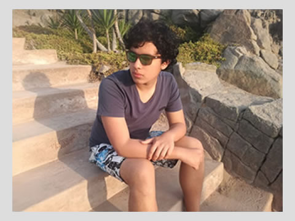

Hola! Bueno, como podrán ver en el título de esta página mi nombre es Christian Polo,
tengo 17 años actualmente(Noviembre del 2018) y soy estudiante de Bioingeniería en UTEC, nací y crecí
en Lima, en la casa de mis abuelos, quienes han sido figuras influyentes en mi formación ya que ellos
junto a mis padres, me criaron, me atrevería a decir incluso que durante mis primeros 5 años pasé más
tiempo con mis abuelos que con mis padres debido a que ellos estaban atareados con sus trabajos.
Crecí como un chico normal, realmente no tenía mucho interés en el estudio, no hasta que llegué a 4to.
año de secundaria en donde empece a ver las cosas de una manera más clara, de ahí fue como me decidí a
estudiar ingeniería y bueno, eso ya se los contaré un poco más abajo en la sección nombrada "¿Por
que escogí la Bioingeniería y como llegué a UTEC?"
Me encanta escuchar música, tengo una afinidad
principalmente por el rock, el rock alternativo, el pop rock y el indie pop, podría decir que tengo alguna
bandas favoritas como : "Green day" , "Panic! at the Disco" o "Twenty one Pilots", podría seguir con las
bandas y mencionar muchas más canciones de estas, pero eso se los dejaré en la sección de
"Mis sugerencias en Música".
Si hay algo que me gusta destacar de mí,es que realmente amo a los animales, es algo que siento tener
innato en mi, amo a los perros, gatos, hámsters,etc.Actualmente tengo un perro, es hembrita y me la encontré
en una caja en plena luz del día en setiembre del 2014, cuando la encontré ella era apenas una cachorra de 3
meses que había sido abandonada en una cajita, estaba sola aunque parecía que antes habían mas cachorritos,
despues de una larga discusión con mi mamá de que hacer con la pequeña, accedió a que la adoptaramos pero ella
iba a pasar un timepo en casa de mi tía, le puse de nombre "Balita" ya que me parecía que sería bastante hiperactiva,
y vaya que no me equivoque,después de 7 meses porfin logre traerla a vivir conmigo, y hasta el día de hoy ella es
mi inseparable compañera, siempre me alegra el día.